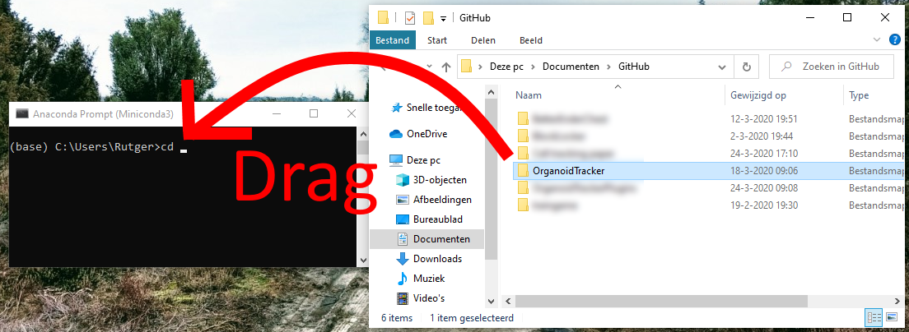

Installation instructions
Note
This current version of OrganoidTracker is different from the version published in our most recent paper. The main change is that the Tensorflow library has been replaced with PyTorch. We have converted our trained neural networks to be compatible with PyTorch. Should you need any assistance upgrading to this version from the old published version, feel free to contact us. In case you still need access to the old version, it is still available.
Old links: Old manual | Old ZIP download | Old source code
Windows
System requirements:
64-bit Windows, version 10 and later
Video card with CUDA 11 support and 2 GB of video RAM
Additional system requirements for training the neural network:
Video card with CUDA 11 support and 11 GB of video RAM
First, make sure you have Miniforge installed. You can download it at conda-forge.org/download. Anaconda or Miniconda should also work, but keep in mind that both may require a paid license.
Second, make sure you have downloaded OrganoidTracker. You can install it through Git (if you’re familiar with that program), or simply download it from here and then extract it somewhere.
Next, to run the scripts you will first need to install the dependencies. Open the Miniforge Prompt, which should now be somewhere in the Start menu. Use the command cd path\to\folder\with\OrganoidTracker (replace path with real path) to navigate to the directory you installed OrganoidTracker in. If you are not used to the command line, you can also type “cd ” (a c, a d and a space) and then drag in the OrganoidTracker folder and drop it in the command prompt, and then press Enter. See this illustration:

If you notice that the Command Prompt didn’t actually change the directory to the OrganoidTracker folder, a common cause is that you’re switching drives, like going from the C: drive to the D: drive. In that case, first just type D: (replace with the appropriate drive letter, and don’t prefix with cd) and press Enter, and then use the cd command again to go to the OrganoidTracker folder.
Once you’re in the right directory, run the following command.
conda env create -f environment-exact-win64.yml
If it fails because CUDA cannot be installed, the most likely cause is that your graphics card does not support CUDA. If you’re not using OrganoidTracker for automated cell tracking on this computer (but for example just for visualization and manual correction), you can instead run this command:
conda env create -f environment.yml
Afterwards, activate the environment you just created by running:
conda activate organoid_tracker
Your command prompt should now start with (organoid_tracker).
If you need to remove (the previous version of) OrganoidTracker, execute this command:
conda env remove -n organoid_tracker
To test if the software is working, run python organoid_tracker.py. A window should pop up, from which you can load images and tracking data. See the Help menu for more information and tutorials.
Tip: you can install the
orjsonlibrary into your Conda environment to speed up saving/loading of AUT files by a factor of two. To do this, run the commandconda install orjson.
macOS and Linux
Unfortunately, OrganoidTracker has only been lightly tested other OSes. Feel free to ask the authors if you run into any problems.
Download and install Miniforge and open the Miniforge Prompt. Use the cd command to navigate to the directory of OrganoidTracker. Run the following command:
conda env create -f environment.yml
Then, to activate the environment you just created, run:
conda activate organoid_tracker
If you need to remove (the previous version of) OrganoidTracker, execute this command:
conda env remove -n organoid_tracker
To test if the software is working, run python organoid_tracker.py (after you have activated the environment). A window should pop up, from which you can load images and tracking data.